What is 'True' in Tennis¶
What is 'True' in Tennis?¶
The Forehands of Novak, Rafa, and Roger¶
John Yandell¶
What is really true in tennis? It's a big question but one that club players or even tournament players often don't ask.
One answer is that there are multiple "truths" in tennis. There are many viable ways to hit the ball across a wide range of grips and strokes and swing patterns. That there is no single "right" way--only a range of valid possibilities.
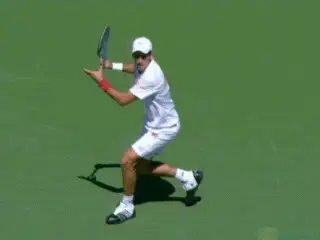
There are multiple truths in the forehands of the top three players.
Over the years I have come to believe more and more that this is the only accurate premise. There may be some wrong ways to approach the strokes, but the idea of a single truth is probably an illusion.
For me the final push over that edge came studying Novak Djokovic and the fascinating similarities and differences in his forehand compared with Roger Federer and Rafael Nadal. (link.)
This premise of relative truth is - to make an understatement - is far from universally accepted in tennis. In fact the opposite is probably closer to the truth. Conflicts and debates over the "right" way to play and teach are endemic. They drag on endlessly and often become personal and acrimonious.
An after dinner speaker at a coaching conference decided to start his talk by loosening up his audience with a joke. "The one thing I can say for certain about teaching pros," he said, "is that everyone of you believes you are the only one that knows what you are talking about." But no one laughed.
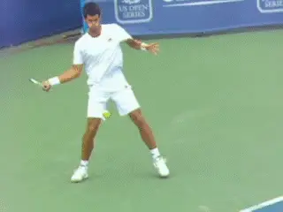
Can we find one way to play, looking at the top, at the moment?
[As a player you have probably had the experience of taking lessons from different pros and hearing contradictory advice and theories - or maybe the same experience with a dozen pros. The fact is that teaching pros are fiercely independent people, and fiercely devoted to their own versions of the truth. The same can often be said about serious players.]
Truth From The Top
The "absolute" faith held by players and coaches is often derived from their perceptions of what the top players of the moment are doing. But, ironically, this kind of truth tends to shift with every change at the top of the game.
Many go from one absolute truth to the next without even bothering to acknowledge the shift. If the top player is doing it, we should all be doing it, right? Winning matches on the tour, in this view, trumps all other arguments.
We can see this phenomenon very clearly if we look at the perception of the forehands of the top three players in the world, and how that perception has changed over time.
Roger Federer was a god and his forehand was the ultimate stroke. It was time for every club player to develop the windshield wiper.
Then Rafael Nadal came along. When Nadal began to dominate Federer, the move was to extreme underneath grips, as much topspin as possible, regardless of circumstance and, of course, radical over the head finishes.
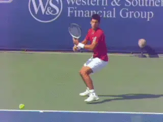
A "new" dominant forehand - with retro elements.
But now, in 2011 Novak Djokovic has clearly dominated Nadal. And the "right" way to play and teach the forehand will undoubtedly change again.
The result will be yet another shift in coaching perspectives and what Djokovic does will become the absolute truth of the moment. Ironically, however, some of the technical elements in his forehand recall players of the past generation. Previously dismissed as outdated and ineffective, I predict they will now be blessed and re-enshrined.
Unless Federer or Nadal get back on top, that is. Or someone new comes along doing something slightly or completely different and creates the next absolute truth.
Ephemeral
Studying the evolution of the game for 30 years - and especially the differences and complexities in the forehands of these three players--has led me to the conclusion that "absolute" truth is an ephemeral concept.
The fundamental problem here is the assumption that technique is what makes the player. But the more likely reality is that the player makes the technique.
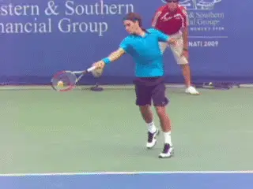
Three players: three preferred finishes.
The question is not what forehand technique is ultimately superior. I doubt we will have a definitive answer until we clone the top three players and teach them all to hit each others forehands. (Although I am expecting more information on this from Brian Gordon, who may correct my perspective once again.)
But I believe that what the forehands of these three players show is that there really aren't black and white, definitive answers. They have all found ways to hit world dominating forehands by combining a range of technical components in ways that are sometimes similar, sometimes different and finally, all highly individualistic.
And I think this what great players will always do. In all likelihood none of the three players developed their forehands following a rigid template imposed by a coach.
Instead they experimented with a range of valid technical options, some of which may have been presented by coaches, and others they may have discovered on their own.
Roger Federer's distinctive sideways head position is a perfect example. Asked who taught it to him he replied that it was something he had always done naturally and that as a junior players coaches and players made fun of him for it.
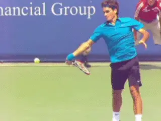
Federer denies anyone taught him his unique forehand head position.
Individual genius means having an intuitive feeling for combining factors that work in an evolving style of play. Top players can't be stamped out according to a blueprint.
The real question is not which technique is true. It's what elements are present in the strokes of top players. Which are common, which are individualistic, and which should other players experiment with for themselves.
This is not to say that players and coaches should not start with preferred concepts or ideas. The shift here, at least in my thinking, is to be more open to experimentation, to letting players follow their own path, evaluating the results, and then continuing to experiment and evolve.
So let's take a close look at the range technical elements in these three great forehands and see the similarities and differences and the surprising variety and complexity of their combinations. In doing so we will look at a wide range of the options in the modern game.
Grips
Conservative grip, up on the baseline, take the ball early, force the opponent on time. Roger Federer. Underneath grip, play up to 12 feet back, hit heavy top, retrieve, counterpunch, pass. Rafael Nadal. These were perceived as the opposite ends of the spectrum.
But as we saw in the previous series on his forehand, Novak breaks this paradigm. By combining elements from the two extremes into a new style of baseline play. (link.) He stands in as close to the baseline as Federer, but his grip is as far under the handle as Nadal.
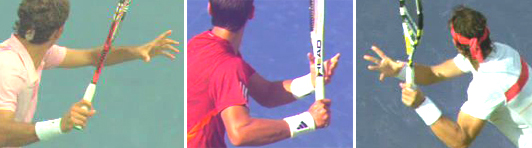
What is the relationship between grip, spin, technique, and playing style?His grip may be as extreme as Nadal but he hits the ball on flatter arcs and with spin rates similar to Federer. (3200rpm on average for Djokovic, compared to 2700rpm for Federer and 3200rpm for Nadal.)
Yet taking the ball on the rise, and hitting flatter from much closer in, Djokovic defends as well as and probably even better than Nadal, again breaking the paradigm.
With his incredible athleticism, balance, and timing, he is almost impossible to hit through. And with his court position and early timing capable of turning defense into offense counterattack in one ball - a point made by television commentator Robbie Koenig his insightful comments on Djokovic in this month's interview. (link.)
Furthermore, compared to either Federer or Nadal, Djokovic hits with more depth and has shown the consistent ability to paint the lines and the corners with incredible accuracy. Not to mention his amazing ability to break off the short angles on the forehand side even when he is on top of the baseline, a key component in his ability to neutralize Nadal's forehand and successfully attack his backhand.

Video demonstration — the original video for this article was hosted on TennisPlayer.net. ** to watch a typically point in which Novak exploits and attacks Rafa's backhand.**
Previously, Nadal appeared to play invincible defense from the deep back court. Now it looks inferior to the defense Novak plays from far closer in, making natural, devastating transitions from defense to attack.
Did Novak learn that extreme grip and play further back as a junior? Who knows? If he did and then later started to move in a play closer to the line, was he ever advised to change his grip to something more behind the handle? Again, unknown.
But did he find a way to combine offense and defense, spin, accuracy, depth and angles with the grip that he had? Definitely. And the person most responsible for that - whatever input he may have had - was Novak Djokovic.
Preparation
As we have seen every player at the top of the game develops his own unique backswing size and shape, and Federer and Nadal and Djokovic are not exceptions. As we have seen many times, however, some commonalities definitely apply in the start of the preparation.
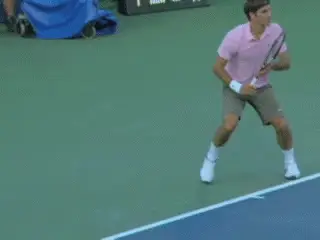
A body turn with a variety of initial step patterns.
[Great preparation at all levels starts with a unit turn involving the feet and the torso, starting to turn the body sideways.] As we have seen, players will use a wide variety in the number of steps and of step sizes and patterns, but the purpose is still the same. (link.)
[As the turn continues, the players keep both hands on the racket to varying degrees, [eventually releasing the opposite hand which then moves to the side across the body, straightens, and points at the sideline, usually also roughly parallel to the baseline.]]
What is most interesting here though is how Djokovic's backswing varies from either Federer or Nadal after the completion of the turn. Much has been made, and possibly rightly so, of the way most of the top men players keep the racket hand on the same side of the body, rather than taking it further back behind as do so many of the women.
Yet when we look at Djokovic we see that unlike any other top player he actually turns the racket face backwards until the strings are flush or parallel with the baseline. In doing so he goes further back and behind than either Federer or Nadal.
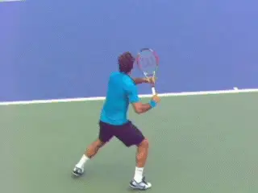
[Compared to Roger, Novak's arm goes behind his body and his racket face turns backward.]
[Is this some unknown advantage - a technical advance that only he has developed? Or is it a liability that he overcomes in some other way? Or is it simply idiosyncratic and/or irrelevant?]
The point is that it is significantly different from the more compact versions of Federer or even Nadal. And at the moment his forehand is dominant. So again, where is the absolute truth? Is it the technique, or simply the player?
Whatever the answer there, his backswing serves the same purpose as Rafa's and Roger's. To position the hitting arm and racket for the start of the forward swing. The big surprise here and the difference with the other two is the shape that hitting arm takes.
Hitting Arm
When Federer and Nadal reached the top of the game, high speed video led to a surprising revelation - unlike the great players such as Agassi and Sampras whom they supplanted, both Roger and Rafa had straight elbows at contact.
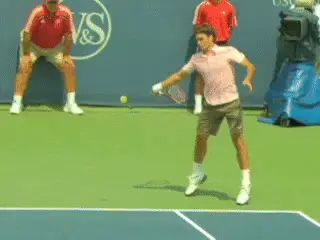
The straight hitting arm: touted as a signature advance in the modern forehand.
This was in contrast to the double bend with the elbow in and the wrist back of the majority of the previous top players. (For more on the Double Bend, link. For more on the Straight Arm, link.)
Many coaches then hailed the straight arm as a magic component and began preaching it as a superior, more advanced hitting arm structure. They further argued that it should be emulated by all top men's and women's players--in fact, by players at all levels. Never mind that no top women's player actually used this configuration and it was virtually unheard of in club tennis as well.
I once had the interesting experience of reviewing video of players who had allegedly been converted to this superior technique. In many cases, however, the video showed their hitting arms were not actually straight, but remained in the classic double bend.
[And again on the internet message boards, there was a rush to follow Roger and Rafa by players at the 3.0 level and up, and reports of wondrous improvement. Hard to believe but then absolute truth brooks no doubt.]
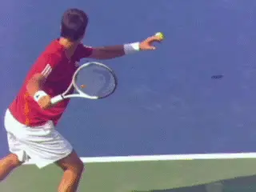
[Elbow bent and tucked in toward the body and the wrist back: the allegedly obsolete double bend hitting arm.]
[Then came the double reverse. Novak Djokovic emerged hitting arguably the best forehands on the tour with the old style, the allegedly extinct, double bend hitting arm position. After he completes that unique backswing, we see his arm drop into the elbow bent, wrist back position.] The same as players of the previous generation: Agassi, Kuerten, Safin, Roddick, Sampras. [So to ask a slightly different version of the same question, is it the hitting arm that makes the player, or the player who makes the hitting arm?]
Finish
And we can ask similar questions regarding the emergence of the allegedly more advanced finishes. Roger, as students of the game noted early in his career, rarely finishes in the "old style" over the shoulder followthrough. Almost everything is some version of a wiper, wraping around the shoulder or the upper torso.
At times, Rafa wrapped around the shoulder as well. But increasingly as his career developed, more of his finishes went more sharply upward over his head and then "reversed" (a time coined by Robert Lansdorp) finishing back on the same side of the body where the swing started.
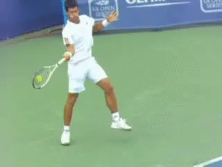
[Novak: a finish over the shoulder like a bunch of bald, retired guys.]
Why would anyone, therefore, want to finish over the shoulder like those bald retired guys? Absolute truth now directly challenged with emergence of Djokovic.
Like Roger, Novak does at times wrap around the shoulder or torso. Like Rafa, he sometimes reverses the finish back to his right side - although this is much rarer and almost always on the run or in a defensive situation.
But the majority of Djokovic's finishes go straight up and over his shoulder. So here we have Novak, defending better than Rafa, attacking better than Roger, and using an "inferior" outdated finish to do both. As I said, I predict an old absolute truth is about to become reborn.
Torso Rotation
When it comes to the amount of torso rotation, Novak turns the categories upside down one more time. [Both Roger and Rafa rotate the front shoulder forward far past parallel with the net on many balls.] [Sometimes they approach or achieve 180 degrees of forward rotation from the turn position, finishing with the front shoulder facing the opponent, combining this with the more exotic wrap and reverse finishes.]
In contrast, the older classic style over the shoulder finishes were generally associated with much less torso rotation. Players like Agassi or Sampras would at times come further around, but tended to rotate more like 90 degrees, finishing with the shoulders closer to parallel with the baseline than perpendicular to the net.
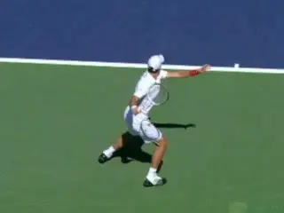
[Djokovic rotates the front shoulder further and more often, up to 180 degrees plus in the foreward swing.]
Again, Novak breaks the paradigm. [On average he rotates the shoulders forward more than either Federer or Nadal, but combines this with the over the shoulder finish.] So here we have a blend of classical and extreme modern - yet another new version of "truth" for coaches and players to contemplate.
The Black Art
[So is truth really absolute or is it actually a matter of belief? Are there immutable principles about how to teach a forehand? Or is the reality messier and more uncertain?]
"Tennis teaching," Allen Fox once told me with a dry smile, "is a black art." Coaches, he continued, are often perceived by players as wizards with secret knowledge. But the danger here is that if the secret knowledge changes, the magic aura disappears.
As I developed my own approach to hitting the tennis ball as a young coach, I was much more dogmatic in how I approached teaching strokes. But, as I developed the various stroke archives for TPA, I began to see more and more differences in the way top players combined elements and how effective these combinations could be.
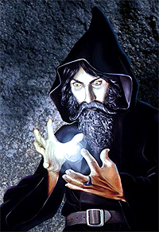
Tennis coaching: a black art suited to wizards?To give one example, after years of believing that the two-handed backhand was basically a left-handed forehand, I was shocked to discover how different the hitting arm structures could be among the top players, ranging from having both arms straight to both arms bent. (link for more on the arm positions on the two-hander.)
This is the same problem we encounter when we try to find absolute guides by studying the forehands of Roger, Rafa, and Novak.
It's one of the biggest challenges that teachers and theoreticians of the game face. What if what they believe and have preached to students for years is undermined by changes at the top of the game? Or what if video shows that what they have taught years is at variance with what top players actually do?
The problem is greatest for those who have adopted and wish to maintain the mantle of wizard. They are often forced to ignore the reality of technique changes at the highest levels.
Often the wizard may react by attacking those who try to engage in discussion or confrontation with facts. You can see this all too clearly if you spend much time on the major tennis internet message boards.
But the other option is to move away from the darkness of the magical world and into the light that comes from objective examination of evidence.
It's scary and it's humbling to make the transition. It means being willing to reexamine even your most cherished beliefs. It means being willing to modify or abandon them in the face of additional evidence. It means deciding that it's more important to be accurate than consistent.

The two-handed backhand actually has a wide range of hitting arm structures.
[I have found that as a player and a coach that when you start to examine the available footage in detail, you will have three experiences.]
First, many of the things you believe will be confirmed, and in fact reinforced. You will actually become much more confident because you are able to put clearer pictures and feelings to your ideas.
The second thing that happens is that you begin to realize that many things you believed happen do in fact happen, just not quite in the exact way or sequence that you thought. This requires adjustment, but again brings added clarity and confidence.
[[The third thing is the most exciting though, if you look at it in the right way. That's when the video shows that something you believed, and possibly believed feverently, is not accurate and needs to be modified. Or that there appear to multiple solutions to problems where previously you had only seen one].]
And here we come back to the differences in the forehands we've been talking about in this article. The more you know, the more complex and varied reality actually appears.
You realize that not only do the players vary among themselves, there is a tremendous range of variation for each individual, depending on ball, circumstance, and intention. Focusing on one or just a few examples isn't enough to understand what a player does on a stroke with as much variation as the forehand.
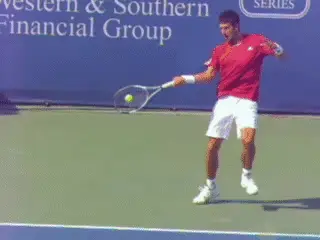
Studying just one or just a few examples can give the wrong impression about the norms for top players.
Typically I look at 100 to 200 forehands to see the range of movement and elements a given player uses. Then and only then do you have a chance of accurately portraying the norms and comparing them to the variations.
It takes an open mind and a lot of work to develop and incorporate these new insights into your teaching and/or playing philosophy, but the result can be a wider and more accurate range of possibilities. The point is that no one player or coach can see it all - the game is just too fast and too dynamic for the human eye. And virtually every writer on TPA - including the big names - has had this same experience digging into the video archives.
It's the mark of a great coach or a smart player to always be looking to revise his thinking, to become more accurate, to understand more completely, to find new information to improve his or her understanding of this amazing game.
That is one of the things I am proudest about on TPA. Not the interpretations I make or those of all the other amazing voices on the site. It's the creation of a resource of unequalled breadth and depth that allows anyone in the world of tennis with the curiosity and the courage to take a look for themselves.
And don't worry if all this confuses you or depresses you, and you feel that you have just had absolute truth taken from you. I will soon be starting a new series on building the forehand, sharing what I have learned over the last decade to help you develop your own flexible, experimental approach to finding the ideal technical combinations for yourself.
Stay Tuned!

John Yandell is widely acknowledged as one of the leading videographers and students of the modern game of professional tennis. His high speed filming for Advanced Tennis and TPA have provided new visual resources that have changed the way the game is studied and understood by both players and coaches. He has done personal video analysis for hundreds of high level competitive players, including Justine Henin-Hardenne, Taylor Dent and John McEnroe, among others.
In addition to his role as Editor of TPA he is the author of the critically acclaimed book Visual Tennis. The John Yandell Tennis School is located in San Francisco, California.